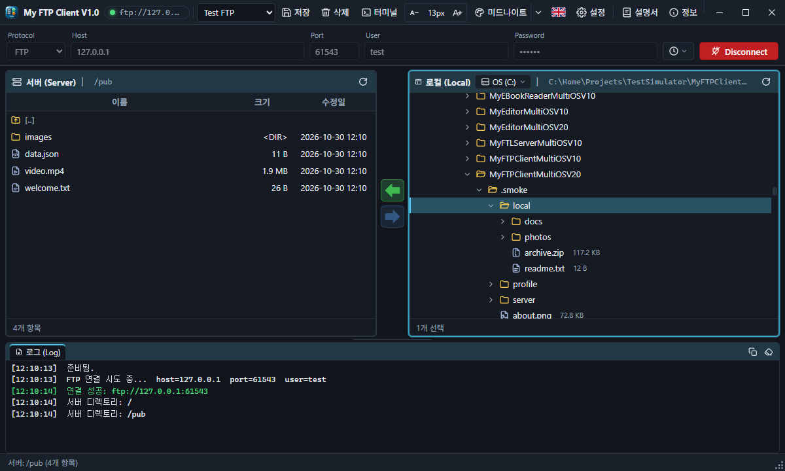
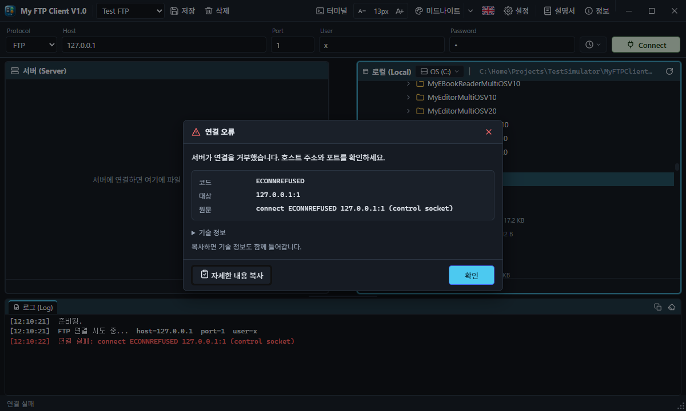
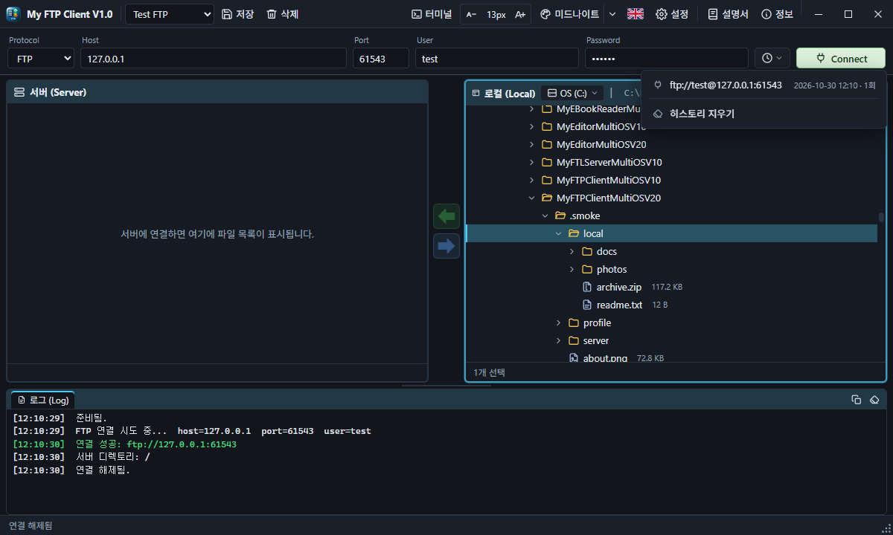
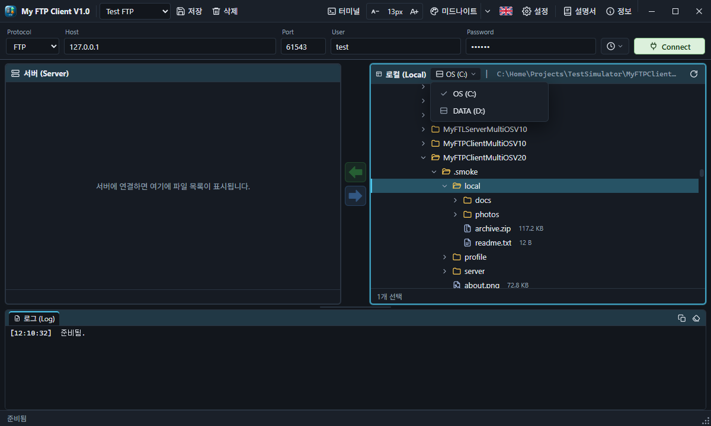
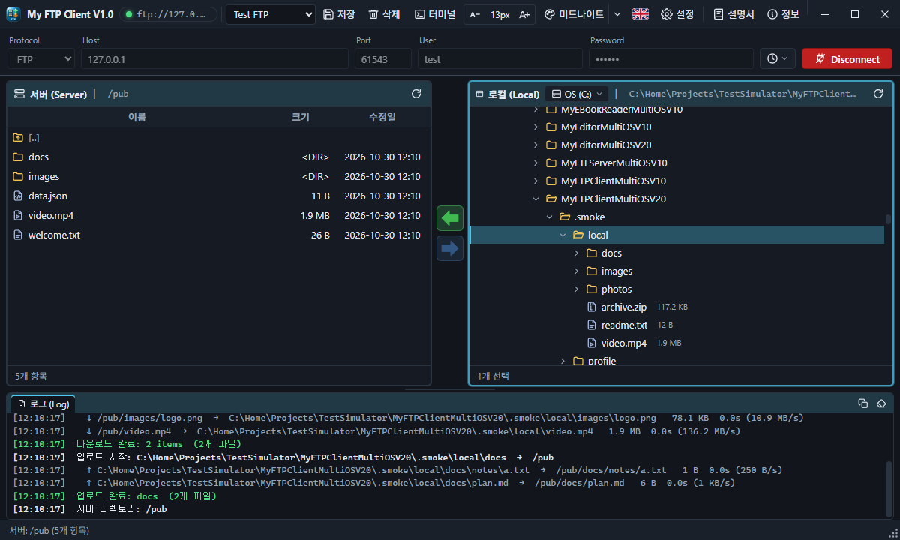
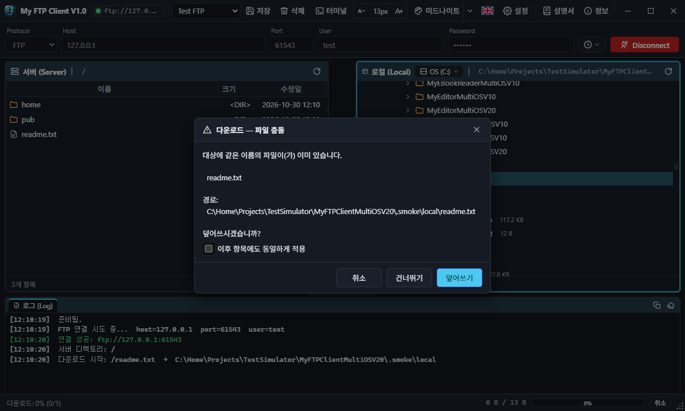
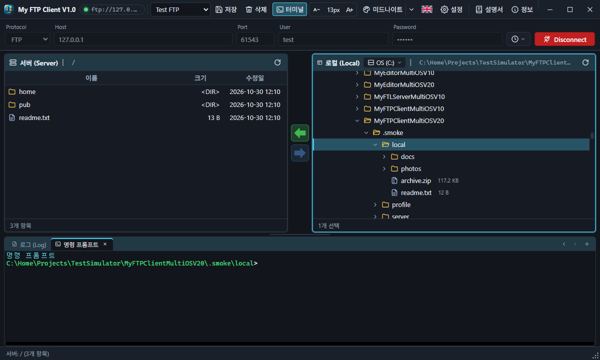
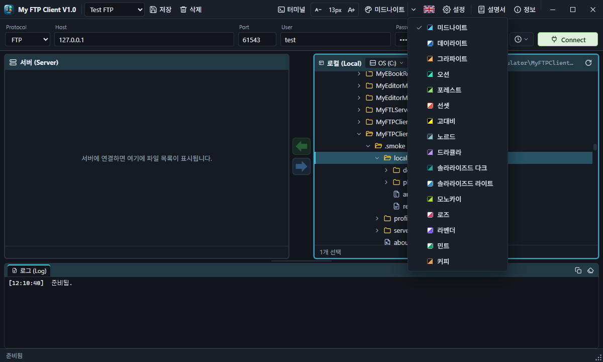
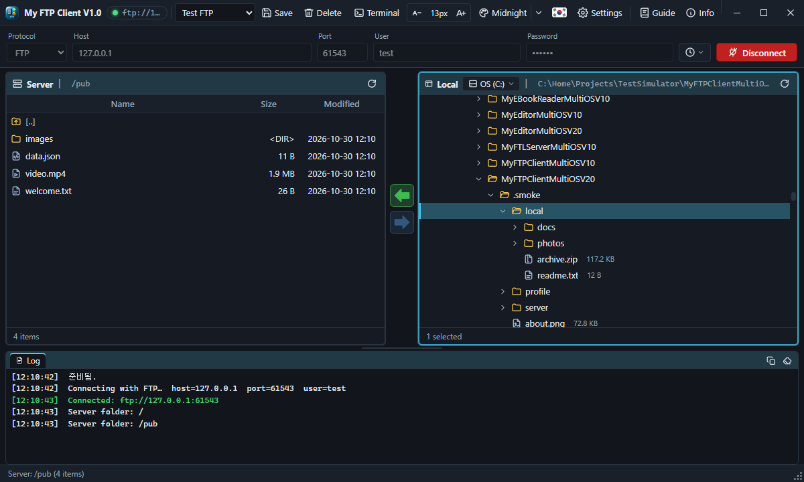
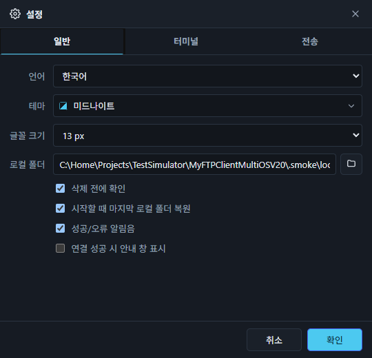

My FTP Client 는 FTP · FTPS · SFTP 서버에 접속해 파일을 올리고 내려받는 프로그램입니다. 왼쪽은 서버, 오른쪽은 내 컴퓨터의 폴더 트리이고, 아래에는 로그와 터미널이 있습니다. Windows · macOS · Linux 데스크톱 앱과 웹 브라우저 판이 같은 화면을 씁니다.
My FTP Client connects to FTP, FTPS and SFTP servers to upload and download files. The server is on the left, your computer's folder tree on the right, and the log and terminal below. The desktop app (Windows, macOS, Linux) and the web version share the same screen.
시작하기Getting started

처음 실행
- 접속 바에서 프로토콜을 고르고 호스트, 사용자, 비밀번호를 입력합니다.
- Connect 를 누르거나 입력란에서 Enter 를 칩니다.
- 왼쪽 서버 목록에서 파일을 고르고 → 로 내려받거나, 오른쪽 로컬 트리에서 고르고 ← 로 올립니다.
설치와 제거
Windows 설치 프로그램은 처음에 한국어/English 를 고릅니다. 이미 설치된 My FTP Client(이전 Electron 판 포함)가 있으면 삭제 후 설치할지 묻고, 남아 있는 데이터(접속 프로파일·기록·설정)를 지울지도 묻습니다. [아니요] 를 고르면 기존 설정을 그대로 이어서 씁니다. 다음 페이지에서 바탕화면 / 시작 메뉴 바로가기를 고릅니다.
설치된 앱에는 Node 런타임이 들어 있으므로 Node.js 를 따로 설치할 필요가 없습니다.
First run
- Pick the protocol on the connection bar and enter the host, user and password.
- Press Connect, or Enter in any of the fields.
- Pick files in the server list on the left and press → to download, or pick them in the local tree on the right and press ← to upload.
Installing and removing
The Windows installer first asks for Korean or English. If My FTP Client is already installed (the earlier Electron build included), it asks whether to remove it and install this version, and whether to delete the data it left (connection profiles, history, settings). Choose No to keep your settings. The next page offers desktop and Start menu shortcuts.
The installed app carries its own Node runtime, so Node.js does not need to be installed.
화면 구성The window
| 영역 | 설명 |
|---|---|
| 툴바 | OS 제목 표시줄을 대신합니다. 앱 이름, 현재 연결(녹색 점), 프로파일(선택 · 저장 · 삭제), 터미널 보기, 글꼴 작게 / 현재 크기 / 글꼴 크게, 테마, 언어, 설정, 설명서, 정보, 그리고 최소화 · 최대화 · 닫기. 빈 곳을 끌면 창이 움직이고, 두 번 클릭하면 최대화/복원됩니다. |
| 접속 바 | 프로토콜 · 호스트 · 포트 · 사용자 · 비밀번호 · 접속 기록 · Connect(연결되면 Disconnect) |
| 서버 패널 | 서버의 현재 폴더. [..] 은 상위 폴더. 폴더 먼저, 이름순. |
| 전송 바 | ← 업로드, → 다운로드. 바를 끌면 두 패널의 너비가 바뀝니다. |
| 로컬 패널 | 드라이브 → 폴더 → 파일 트리. 고른 폴더가 다운로드 대상이며 다음 실행 때 다시 열립니다. |
| 하단 독 | 로그 탭과 터미널 탭. 가로 막대를 끌어 높이를 바꿉니다. |
| 상태 표시줄 | 현재 상태와 전송 진행률 · 속도 · 취소. 오른쪽 아래 점 무늬(크기 조절 마커)를 끌면 창 크기가 바뀝니다. |
창의 최소 크기는 1200×720 이며 이 크기에서도 툴바와 창 버튼이 한 줄로 모두 보입니다. 창 위치와 크기는 기억했다가 다음에 그대로 엽니다.
| Area | What it is |
|---|---|
| Toolbar | Replaces the OS title bar: app name, current connection (green dot), profiles (pick · save · delete), terminal view, smaller / current size / larger text, theme, language, settings, Guide, about, and minimize · maximize · close. Drag an empty spot to move the window; double-click to maximize or restore. |
| Connection bar | Protocol · host · port · user · password · history · Connect (Disconnect once connected) |
| Server panel | The server's current folder. [..] is the parent. Folders first, by name. |
| Transfer bar | ← upload, → download. Drag the bar to change the panel widths. |
| Local panel | Drives → folders → files. The chosen folder is where downloads go, and it opens again next time. |
| Bottom dock | The log tab and terminal tabs. Drag the bar above it to change its height. |
| Status bar | Current state, transfer progress, speed and Cancel. Drag the dotted grip at the bottom-right to resize the window. |
The smallest window is 1200×720; every toolbar control and window button still fits on one row. The window opens where and as large as you left it.
서버에 연결하기Connecting
접속 정보
- 프로토콜을 바꾸면 포트가 맞게 바뀝니다 (FTP/FTPS 21, SFTP 22). 다른 포트는 직접 입력합니다.
- FTP 에서 사용자를 비우면 anonymous 로 접속합니다.
- 호스트 칸에
ftp://ftp.example.com/pub,sftp://user:pw@host:2222같은 URL 을 붙여 넣으면 프로토콜 · 호스트 · 포트 · 사용자 · 비밀번호로 나뉘어 채워집니다. - FTPS 는 명시적 TLS(AUTH TLS)를 쓰며 서버 인증서를 검증하지 않습니다. SFTP 는 비밀번호(키보드 인터랙티브 포함) 인증입니다.
연결 중과 오류
연결하는 동안 상태 표시줄에 진행 표시와 취소 가 나옵니다. 30초 안에 연결되지 않으면 시간 초과입니다. 실패하면 오류 창에 원인, 코드, 자세한 내용이 나오고 자세한 내용 복사 로 클립보드에 복사할 수 있습니다.

Connection details
- Changing the protocol sets its port (FTP/FTPS 21, SFTP 22). Type another port if the server uses one.
- An empty user on FTP logs in as anonymous.
- Paste a URL such as
ftp://ftp.example.com/puborsftp://user:pw@host:2222into Host: it is split into protocol, host, port, user and password. - FTPS uses explicit TLS (AUTH TLS) and does not verify the server certificate. SFTP uses password (and keyboard-interactive) authentication.
While connecting, and errors
While connecting, the status bar shows progress and Cancel. After 30 seconds without an answer the attempt times out. A failure opens an error window with the cause, a code and the details; Copy details puts them on the clipboard.
프로파일과 접속 기록Profiles and history
프로파일
- 툴바의 저장 은 현재 접속 정보를 이름을 붙여 저장합니다. 같은 이름이면 덮어씁니다.
- 목록에서 고르면 접속 정보가 채워지고, 마지막에 고른 프로파일은 다음 실행 때 자동으로 채워집니다.
- 삭제 는 목록 창에서 여러 개를 체크해 한 번에 지웁니다.
접속 기록
Connect 왼쪽의 시계 단추는 연결에 성공한 서버를 최신순으로 보여 줍니다(최근 20개, 접속 횟수·시각). 고르면 프로토콜 · 호스트 · 포트 · 사용자가 채워지고, 같은 서버의 프로파일이 있으면 비밀번호도 채워집니다. 기록에는 비밀번호를 저장하지 않습니다.

Profiles
- Save on the toolbar stores the current connection under a name; the same name overwrites it.
- Picking one fills in the connection; the last one picked is filled in at the next start.
- Delete lets you tick several in a list and remove them at once.
History
The clock button left of Connect lists the servers you connected to, newest first (last 20, with count and time). Picking one fills in protocol, host, port and user, and the password when a profile for that server exists. History never stores passwords.
파일 탐색Browsing
서버 패널
- 폴더를 두 번 클릭하거나 Enter: 들어가기.
[..]또는 Backspace: 상위 폴더. - 파일을 두 번 클릭하거나 Enter: 현재 로컬 폴더로 다운로드.
- Ctrl+클릭, Shift+클릭으로 여러 개 선택, Ctrl+A 전체 선택, F5 새로 고침.
- Del 선택한 항목(여러 개도) 삭제, F2 이름 바꾸기, Ctrl+C / X / V 복사 · 잘라내기 · 붙여넣기 — 로컬 패널도 같습니다.
로컬 패널
- ▸ 를 누르거나 폴더를 두 번 클릭하면 펼쳐집니다. → / ← 로 펼치기·접기.
- 파일을 두 번 클릭하거나 Enter: 서버의 현재 폴더로 업로드.
- 제목 옆의 드라이브 단추로 다른 드라이브나 홈 폴더로 바로 갑니다.

Server panel
- Double-click a folder or press Enter to open it;
[..]or Backspace goes up. - Double-click a file or press Enter to download it to the current local folder.
- Ctrl+click and Shift+click select several, Ctrl+A selects all, F5 refreshes.
- Del deletes the selection (several items too), F2 renames, Ctrl+C / X / V copy, cut and paste — the same in the local panel.
Local panel
- Click ▸ or double-click a folder to expand it; → / ← expand and collapse.
- Double-click a file or press Enter to upload it to the server's current folder.
- The drive button next to the title jumps to another drive or your home folder.
업로드와 다운로드Uploading and downloading
보내는 방법
| 방법 | 동작 |
|---|---|
| 서버에서 고르고 → | 현재 로컬 폴더로 다운로드 |
| 로컬에서 고르고 ← | 서버의 현재 폴더로 업로드 |
| 두 번 클릭 | 파일 하나를 바로 전송 |
| 오른쪽 클릭 → 다운로드 / 업로드 | 메뉴에서 전송 |
진행과 결과
- 폴더는 하위 폴더까지 통째로 옮깁니다. 먼저 전체 파일 수와 크기를 세어 진행률과 속도를 보여 줍니다.
- 동시 전송 수(설정, 기본 3)만큼 나란히 옮기며, 상태 표시줄의 취소 로 언제든 멈춥니다.
- 파일마다 로그 한 줄(원본 → 대상, 크기, 걸린 시간, 속도)이 남고, 끝나면 결과가 기록되고 패널이 새로 고쳐집니다.

같은 이름이 있을 때
크기와 날짜가 같으면 건너뛰기(설정, 기본 켜짐)에 해당하지 않으면 충돌 창이 뜹니다. 덮어쓰기 / 건너뛰기 / 취소 중에서 고르고, "이후 항목에도 동일하게 적용" 을 체크하면 남은 파일에 같은 답을 씁니다.

복사 · 잘라내기 · 붙여넣기
| 복사한 곳 → 붙여넣는 곳 | 동작 |
|---|---|
| 로컬 → 서버 | 서버의 현재 폴더로 업로드 (잘라내기면 뒤에 로컬 원본 삭제) |
| 서버 → 로컬 | 현재 로컬 폴더로 다운로드 (잘라내기면 뒤에 서버 원본 삭제) |
| 서버 → 서버 | 잘라내기는 이름 바꾸기로 이동, 복사는 임시 폴더를 거쳐 다시 올림 |
| 로컬 → 로컬 | 폴더째 복사 / 이동 |
| 탐색기 ↔ 앱 | 탐색기에서 복사한 파일을 패널에 Ctrl+V, 로컬 패널에서 복사한 파일을 탐색기에 붙여 넣기 (Windows) |
잘라낸 항목은 흐리게 보입니다. 같은 폴더에 복사하면 이름 (2).txt 처럼 새 이름이 붙고, 같은 이름이 있으면 위의 충돌 창이 뜹니다.
끌어 놓기
- 행을 다른 패널로 끌면 전송, 같은 패널의 폴더 행으로 끌면 그 폴더로 옮깁니다. 커서 옆에 복사 → 폴더 / 이동 → 폴더 가 보입니다.
- 탐색기와 같은 규칙: 같은 쪽(같은 드라이브)은 이동, Ctrl 은 복사. 다른 쪽이나 앱 밖의 파일은 복사, Shift 는 이동. Esc 로 취소.
- 탐색기·바탕 화면의 파일을 서버 패널에 놓으면 바로 업로드, 로컬 폴더 행에 놓으면 그 폴더로 복사합니다.
- 창 밖으로 끌어 탐색기·바탕 화면에 놓을 수 있습니다. 서버 항목은 임시 폴더로 먼저 받으니 그동안 버튼을 누르고 있으세요 (Windows). 웹 버전은 창 안에서만 됩니다.
Ways to transfer
| How | What happens |
|---|---|
| Pick on the server, press → | Download to the current local folder |
| Pick locally, press ← | Upload to the server's current folder |
| Double-click | Transfer one file right away |
| Right-click → Download / Upload | Transfer from the menu |
Progress and results
- Folders go with everything inside. The files are counted and sized first, so progress and speed are exact.
- Up to the number of parallel transfers (Settings, default 3) move at once; Cancel on the status bar stops at any time.
- Each file leaves one log line (source → target, size, time, speed); at the end the result is logged and the panel refreshes.
When the name exists
Unless "skip when size and date match" (Settings, on by default) applies, a conflict window asks: Overwrite, Skip or Cancel. Tick "apply to the rest" to give the same answer for the remaining files.
Copy, cut and paste
| Copied from → pasted into | What happens |
|---|---|
| Local → server | Upload to the server's current folder (a cut removes the local originals afterwards) |
| Server → local | Download to the current local folder (a cut removes the server originals afterwards) |
| Server → server | A cut moves by renaming; a copy goes through a temporary folder and back up |
| Local → local | Copy or move, folders included |
| Explorer ↔ the app | Files copied in Explorer paste into a panel with Ctrl+V; files copied in the local panel paste into Explorer (Windows) |
Cut items are dimmed. A copy into the same folder gets a new name such as name (2).txt; an existing name brings up the conflict window above.
Drag and drop
- Drag rows to the other panel to transfer them, or onto a folder row in the same panel to put them there. The cursor shows Copy → folder or Move → folder.
- Explorer's rules: on the same side (same drive) a drag moves, Ctrl copies; to the other side or from outside the app it copies, Shift moves. Esc cancels.
- Files from Explorer or the desktop dropped on the server panel are uploaded right away; dropped on a local folder row they are copied there.
- Drag out of the window onto Explorer or the desktop. Server items are fetched to a temporary folder first, so keep the button down meanwhile (Windows). The web version drags inside the page only.
터미널Terminal
툴바의 터미널 보기 를 켜면 하단 독에 터미널 탭이 생깁니다. + 로 이 컴퓨터에 설치된 셸(PowerShell, 명령 프롬프트, Git Bash, WSL, bash, zsh …)을 골라 탭을 엽니다(최대 8개). SFTP 로 연결된 동안에는 원격 SSH 셸도 고를 수 있습니다.

키
| 키 | 동작 |
|---|---|
| Tab | 명령과 경로 자동 완성. 후보가 여럿이면 한 번 더 눌러 목록 |
| ↑ / ↓ | 이전 명령 |
| Ctrl+C | 실행 중인 명령 중단 (선택 영역이 있으면 복사) |
| Ctrl+V | 붙여넣기 |
| Ctrl+L | 화면 지우기 |
프롬프트와 글꼴
시작 폴더, 글꼴, 글꼴 크기, 최대 줄 수, 셸마다의 프롬프트({path} {folder} {shell} {user} {host})는 설정의 터미널 탭에서 바꿉니다.
Turn on Terminal view on the toolbar to get terminal tabs in the bottom dock. + opens a tab with one of the shells installed on this computer (PowerShell, Command Prompt, Git Bash, WSL, bash, zsh …), up to 8. While connected over SFTP, a remote SSH shell is offered too.
Keys
| Key | What it does |
|---|---|
| Tab | Completes commands and paths; press again to list several candidates |
| ↑ / ↓ | Earlier commands |
| Ctrl+C | Stops the running command (copies when text is selected) |
| Ctrl+V | Paste |
| Ctrl+L | Clear the screen |
Prompt and font
The start folder, font, font size, line limit and each shell's prompt ({path} {folder} {shell} {user} {host}) are on the Terminal tab of Settings.
테마 · 언어 · 글꼴 크기Theme, language and text size
테마
테마 단추의 왼쪽은 다음 테마로 바꾸고, ▾ 는 16가지(어두운 10, 밝은 6) 목록을 엽니다. 대화 상자와 이 설명서도 같은 테마로 바로 바뀝니다.

언어와 글꼴 크기
국기 단추는 바꿀 언어의 국기를 보여 줍니다(한국어 ↔ English). 툴바의 A− / 현재 px / A+ 는 터미널 글꼴(8–32px)과 화면 글꼴(11–18px)을 함께 바꿉니다.

Theme
The left half of the theme button goes to the next theme; ▾ opens the list of 16 (10 dark, 6 light). Dialogs and this guide change with it at once.
Language and text size
The flag button shows the language you switch to (Korean ↔ English). A− / current px / A+ on the toolbar change the terminal font (8–32px) and the screen font (11–18px) together.
설정Settings
설정 창은 탭으로 나뉜 고정 크기 창이며 스크롤바가 없습니다. 테마를 고르면 바로 미리 보기가 적용되고, 취소하면 원래대로 돌아갑니다.

일반
언어 · 테마 · 글꼴 크기 · 로컬 폴더(찾아보기 단추로 폴더 선택) · 삭제 전에 확인 · 마지막 로컬 폴더 복원 · 알림음 · 연결 성공 안내 창.
터미널
시작 폴더 · 글꼴 · 글꼴 크기 · 최대 줄 수 · 셸별 프롬프트.
전송
동시 전송 수(1–4) · 크기와 날짜가 같으면 건너뛰기.
Settings is a fixed-size window split into tabs, with no scroll bar. A theme picked there previews at once; Cancel puts the old one back.
General
Language · theme · text size · local folder (with a Browse button) · confirm before delete · reopen the last local folder · sounds · window after connecting.
Terminal
Start folder · font · font size · line limit · prompt per shell.
Transfer
Parallel transfers (1–4) · skip when size and date match.
팝업 창과 설명서 창Pop-up windows and this guide
팝업 창
확인 · 오류 · 충돌 · 설정 · 정보 창은 데스크톱 앱에서 메인 창과 따로 열리므로 메인 창 밖이나 다른 모니터로 옮길 수 있습니다. 크기는 내용에 맞춰 열린 뒤 고정되며, 메인 창을 닫으면 함께 닫힙니다.
설명서 창
툴바의 설명서 는 이 문서를 독립된 창으로 엽니다. 메인 창 밖 어디로든 옮길 수 있고, 메인 창과 따로 최소화·최대화할 수 있습니다. 메인 창의 테마와 언어를 따라가며, 위쪽 단추로 언어와 글자 크기(− / 현재 px / +)를 이 창에서만 바꿀 수 있습니다. 왼쪽은 문서의 구조, 오른쪽은 내용입니다.
Pop-ups
Confirm, error, conflict, settings and about open as windows of their own in the desktop app, so you can move them outside the main window or to another monitor. They are sized to their content, then fixed, and close with the main window.
The guide window
Guide on the toolbar opens this document in a window of its own. Move it anywhere outside the main window and minimize or maximize it separately. It follows the main window's theme and language; the buttons at the top change the language and the text size (− / current px / +) here only. The structure is on the left, the content on the right.
웹 버전The web version
npm run web # http://127.0.0.1:5188 — 이 컴퓨터에서만 node server/server.js --host 0.0.0.0 --port 8080 --token 비밀값 --no-open
브라우저 화면은 데스크톱 앱과 같습니다. "로컬" 은 서버 프로그램이 도는 컴퓨터의 파일이고, FTP/SFTP 연결도 그 컴퓨터에서 이루어집니다. 다른 컴퓨터에서 쓰려면 반드시 --token 을 주고 http://주소:포트/?token=비밀값 으로 접속합니다. 브라우저에서는 탐색기에서 열기와 열기를 쓸 수 없고, 팝업은 페이지 안에 뜨며, 이 설명서는 새 탭으로 열립니다.
npm run web # http://127.0.0.1:5188 — this computer only node server/server.js --host 0.0.0.0 --port 8080 --token secret --no-open
The browser shows the same screen as the desktop app. "Local" is the computer the server runs on, and FTP/SFTP connections are made from there. To use it from another computer, always pass --token and open http://address:port/?token=secret. In a browser, Show in file manager and Open are not available, pop-ups appear inside the page, and this guide opens in a new tab.
데이터 파일과 문제 해결Data files and troubleshooting
데이터 파일
| 파일 | 내용 |
|---|---|
session.json | 설정, 마지막 폴더, 창 위치, 터미널 글꼴·프롬프트 |
profiles.json | 접속 프로파일 |
history.json | 접속 기록 (비밀번호 없음) |
위치: Windows %APPDATA%\My FTP Client\, macOS ~/Library/Application Support/My FTP Client/, Linux ~/.config/My FTP Client/. 이전 Electron 판과 같은 폴더라 설정이 그대로 이어집니다.
문제 해결
- 비밀번호는 base64 로만 감춰집니다. 공용 컴퓨터에서는 프로파일에 비밀번호를 저장하지 마세요.
- FTP 는 수동(passive) 모드로 접속합니다. 서버가 잘못된 수동 모드 주소를 알려 주면 데이터 연결이 실패할 수 있습니다.
- 오류 창의 자세한 내용 복사 로 원인과 기술 정보를 함께 복사해 전달할 수 있습니다.
Data files
| File | Holds |
|---|---|
session.json | Settings, last folder, window position, terminal font and prompts |
profiles.json | Connection profiles |
history.json | Connection history (no passwords) |
Location: Windows %APPDATA%\My FTP Client\, macOS ~/Library/Application Support/My FTP Client/, Linux ~/.config/My FTP Client/. It is the same folder the Electron build used, so settings carry over.
Troubleshooting
- Passwords are only hidden with base64. Do not save passwords in profiles on a shared computer.
- FTP connects in passive mode. A server that announces a wrong passive address makes data connections fail.
- Copy details in an error window copies the cause together with the technical details, ready to pass on.